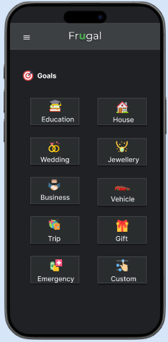
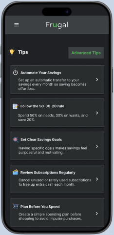

Case Study
Frugal — A Finance & Budgeting App
Frugal is a personal exploration into how design can make budgeting feel approachable. Instead of focusing purely on charts and numbers, the experience guides everyday users with tips, goals, and coaching moments that build confidence.
The challenge
During a casual conversation with friends and family about managing household expenses, I heard the same theme repeated: everyone wanted to save more, but no one felt confident about how to structure a budget. People were not asking for another spreadsheet. They wanted reassurance and gentle guidance on whether they were doing it right.
Role & responsibilities
Research
1:1 interviews, diary notes, and comparative analysis focusing on behaviors, not just demographics.
Design
Paper wireframes → mid-fidelity flows → polished UI in Figma with a lightweight design system.
Validation
Unmoderated usability tests with five active budgeters to understand clarity and confidence.
Early insights
Research showed the real barrier wasn’t transaction entry—it was confidence. Participants could record purchases but hesitated when applying budgeting principles consistently. They needed contextual nudges, small wins, and proof that they were on the right track.
Reframing the problem
The initial goal of “make expense tracking clearer” evolved into “help people feel confident about their money decisions.” That shift pushed the design away from data-dense dashboards and toward guided learning.
Design direction
- Simplicity: surface only what’s needed right now.
- Progressive guidance: integrate tips and education inside the budgeting flow.
- Visual clarity: a calm dark UI with structured cards and plenty of breathing room.
Exploration
Early paper sketches allowed fast exploration of navigation patterns and the information hierarchy.


The solution
Guided learning
Tips and contextual insights live at the top of the dashboard, nudging users into action.
Purpose-driven saving
Goal categories connect financial choices with meaningful outcomes, encouraging consistency.
Clarity through design
A dark interface, structured cards, and restrained typography keep the experience calm and focused.



Testing & iteration
Participants were asked to record a transaction, apply a budgeting tip, create a goal, and review spending statistics. Findings:
- People expected the menu icon to store every primary feature—navigation labels were refined to match.
- The transaction flow felt easy once discovered, so onboarding cues were improved.
- Structured guidance through tips and goals resonated strongly, validating the coaching-first direction.
Impact
After refinements, participants completed flows with less hesitation and described the experience as “a coach, not another tracker.” The project reinforced how reframing the problem and validating each step can transform budgeting from a data task into a guided behavioral experience.